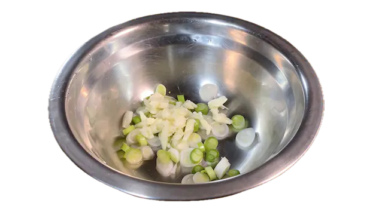
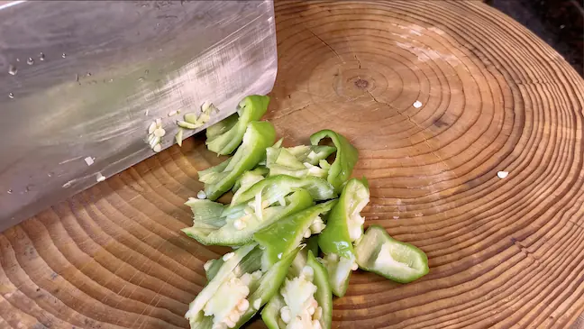
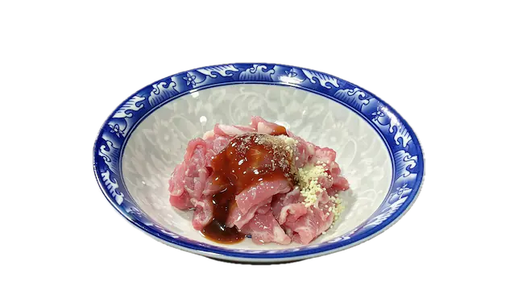
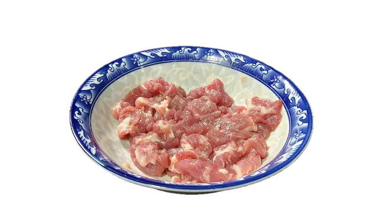
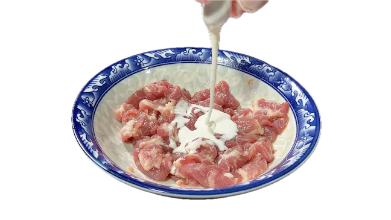
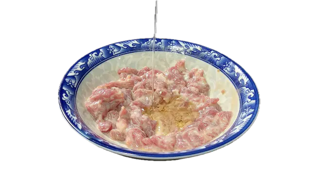
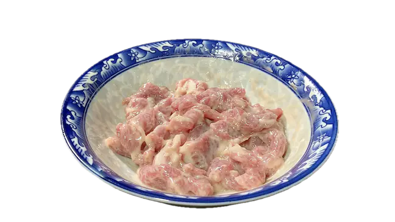
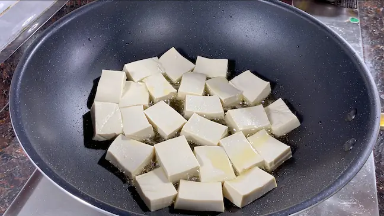
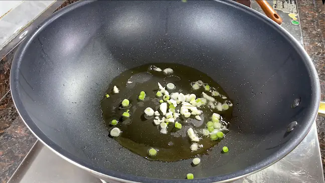
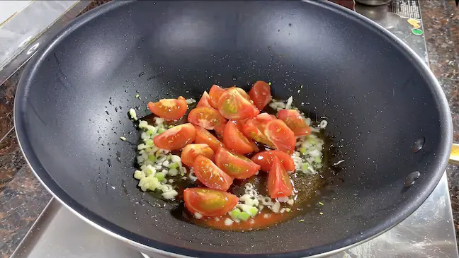

准备食材
番茄、豆腐、猪肉、葱、蒜、螺丝椒、盐、糖、水淀粉、开水。
- 番茄去皮、切块；
- 豆腐切块；
- 葱白、蒜切末；
- 螺丝椒滚刀切片；


- 猪肉切片、腌制；
- 加少许蚝油、盐、鸡精、胡椒粉、料酒，充分抓拌均匀；
- 加入少许红薯淀粉，抓匀；
- 封油，加少量油，进一步锁水，抓匀，让肉片更加滑嫩。





烹饪
- 起锅烧油，开中小火煎豆腐，时不时轻轻晃动下锅，煎到金黄焦香，盛出备用；
- 放入葱、蒜，开中火炒香；
- 加入番茄，炒出汁水；
- 倒入开水；看个人洗好，喜欢汁多的可以加多点开水；
- 调味，加入适量盐、糖；继续搅拌均匀，让调料充分化开；
- 转大火，将肉片分散得下锅，防止粘连；
暂时不要动，以免肉片脱粉浆，20秒后，轻轻搅动下，继续煮大概1分钟； - 加入煎好的豆腐，味煮一会，让豆腐入味， （3分钟左右），加入适量水淀粉（勾芡），快速推开搅匀；
- 加入螺丝椒，翻炒几下；
- 最后，淋点油，翻几下，出锅。


